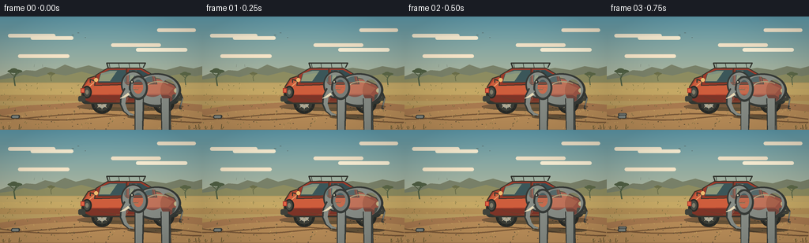
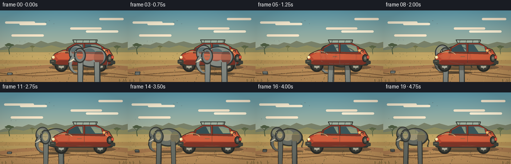
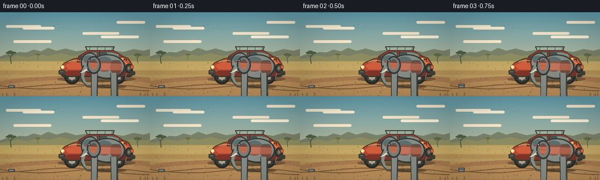
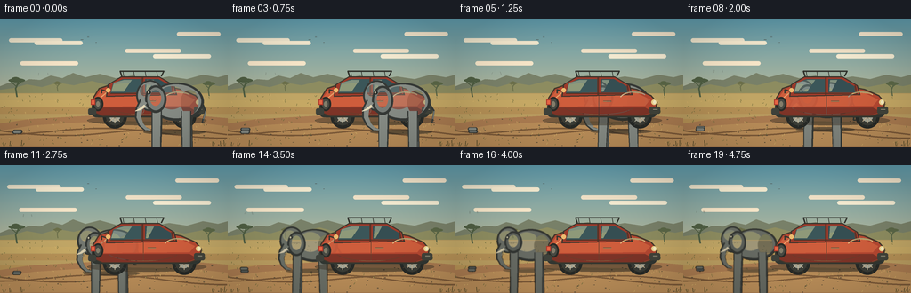
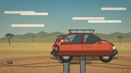
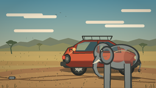
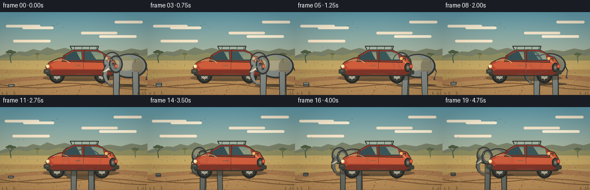
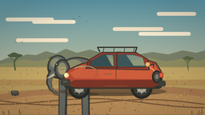
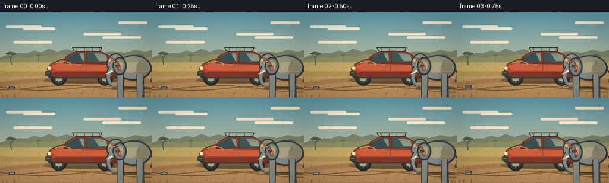
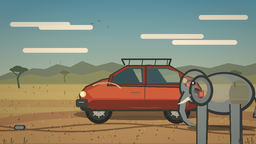

CODING AGENTS AS PIXEL WORLD MODELS
traex/DeepSeek-V4.1-Flash · dynamic_spatial_relationship_0068
点击播放 · 原生 RGB 像素
逐轮保存的候选
回放视频、检查图与代码变化。
每份候选均可单独播放。实际图片检查记录在下方工具轨迹中。
候选 01播放与检查图
点击播放 · 原生 RGB 像素


展开代码变化
--- 上一保存版本
+++ 本次保存版本
@@ -0,0 +1,579 @@
+from __future__ import annotations
+
+import math
+from pathlib import Path
+
+import numpy as np
+from PIL import Image, ImageDraw, ImageFilter
+
+import artifact_io
+
+
+WIDTH = 256
+HEIGHT = 144
+FRAME_COUNT = 20
+FPS = 4.0
+SS = 4
+W = WIDTH * SS
+H = HEIGHT * SS
+
+
+def sc(value: float) -> int:
+ return int(round(value * SS))
+
+
+def xy(x: float, y: float) -> tuple[int, int]:
+ return sc(x), sc(y)
+
+
+def box(x0: float, y0: float, x1: float, y1: float) -> tuple[int, int, int, int]:
+ return sc(x0), sc(y0), sc(x1), sc(y1)
+
+
+def mix(a: tuple[int, ...], b: tuple[int, ...], t: float) -> tuple[int, ...]:
+ return tuple(int(round(a[i] * (1.0 - t) + b[i] * t)) for i in range(3))
+
+
+def rgba(color: tuple[int, ...], alpha: int = 255) -> tuple[int, ...]:
+ return (*color[:3], alpha)
+
+
+def smoothstep(t: float) -> float:
+ t = max(0.0, min(1.0, t))
+ return t * t * (3.0 - 2.0 * t)
+
+
+def ease_in_out(t: float) -> float:
+ return 0.5 - 0.5 * math.cos(math.pi * max(0.0, min(1.0, t)))
+
+
+def rounded_polygon(draw: ImageDraw.ImageDraw, points, fill, outline=None, width=1):
+ draw.polygon([xy(x, y) for x, y in points], fill=fill, outline=outline, width=sc(width))
+
+
+def vertical_gradient(size, top, bottom):
+ width, height = size
+ ramp = np.linspace(0.0, 1.0, height, dtype=np.float32)[:, None, None]
+ a = np.asarray(top, dtype=np.float32)[None, None, :]
+ b = np.asarray(bottom, dtype=np.float32)[None, None, :]
+ data = np.broadcast_to(a * (1.0 - ramp) + b * ramp, (height, width, 3))
+ return Image.fromarray(np.uint8(np.clip(data, 0, 255)), "RGB")
+
+
+def add_glow(image: Image.Image, center, radius, color, opacity):
+ layer = Image.new("RGBA", image.size, (0, 0, 0, 0))
+ d = ImageDraw.Draw(layer)
+ cx, cy = center
+ for i in range(8, 0, -1):
+ r = radius * i / 8
+ a = int(opacity * (1.0 - i / 9.0) ** 1.8)
+ d.ellipse(box(cx - r, cy - r, cx + r, cy + r), fill=rgba(color, a))
+ layer = layer.filter(ImageFilter.GaussianBlur(sc(8)))
+ image.alpha_composite(layer)
+
+
+def draw_background(draw: ImageDraw.ImageDraw, time_s: float):
+ sky = vertical_gradient((W, H), (92, 157, 178), (248, 211, 151)).convert("RGBA")
+ return sky
+
+
+def draw_landscape(image: Image.Image, draw: ImageDraw.ImageDraw, time_s: float):
+ # High, hazy cloud bands.
+ for y, x0, x1, color, alpha in [
+ (22, 9, 69, (246, 237, 214), 105),
+ (25, 38, 92, (255, 243, 218), 120),
+ (34, 139, 202, (246, 232, 207), 105),
+ (40, 174, 239, (255, 244, 220), 100),
+ (15, 197, 246, (249, 235, 211), 100),
+ (48, 21, 86, (255, 237, 209), 72),
+ ]:
+ drift = math.sin(time_s * 0.32 + x0) * 2.2
+ draw.rounded_rectangle(
+ box(x0 + drift, y, x1 + drift, y + 4.5), radius=sc(2.5), fill=rgba(color, alpha)
+ )
+
+ # Distant layered hills and escarpment.
+ far_hills = [
+ (0, 76), (10, 72), (21, 73), (33, 68), (45, 69), (57, 64),
+ (70, 67), (82, 61), (96, 66), (112, 62), (130, 67), (149, 64),
+ (168, 69), (190, 65), (210, 68), (228, 63), (245, 66), (256, 63),
+ (256, 91), (0, 91),
+ ]
+ rounded_polygon(draw, far_hills, (120, 130, 108, 255))
+ near_hills = [
+ (0, 80), (15, 78), (30, 74), (47, 77), (65, 72), (83, 75),
+ (103, 70), (122, 75), (143, 72), (164, 76), (186, 72), (207, 77),
+ (228, 73), (247, 76), (256, 74), (256, 98), (0, 98),
+ ]
+ rounded_polygon(draw, near_hills, (142, 143, 99, 255))
+
+ # Sun-washed savanna floor.
+ draw.rectangle(box(0, 84, 256, 144), fill=rgba((191, 162, 100)))
+ for y, color in [
+ (85, (196, 170, 105)), (92, (202, 173, 104)), (100, (185, 148, 89)),
+ (113, (188, 151, 89)), (126, (173, 133, 78)), (140, (154, 116, 68)),
+ ]:
+ draw.rectangle(box(0, y, 256, y + 7), fill=rgba(color, 70))
+
+ # A winding dirt road with perspective and worn wheel ruts.
+ road = [
+ (0, 118), (33, 113), (69, 111), (104, 109), (141, 108),
+ (180, 108), (220, 109), (256, 112), (256, 144), (0, 144),
+ ]
+ rounded_polygon(draw, road, (174, 126, 83, 255))
+ draw.polygon(
+ [xy(0, 126), xy(38, 120), xy(84, 117), xy(134, 115), xy(186, 116),
+ xy(228, 118), xy(256, 121), xy(256, 143), xy(0, 143)],
+ fill=rgba((190, 145, 92), 118),
+ )
+ for offset in (0, 1):
+ path = []
+ for x in range(-5, 262, 10):
+ y = 126 + 0.016 * x + 4.5 * math.sin(x / 40.0 + offset * 1.7)
+ path.append(xy(x, y))
+ draw.line(path, fill=rgba((126, 91, 58), 90), width=sc(1.7), joint="curve")
+
+ # Grass and small stones break up the flat color fields.
+ rng = np.random.default_rng(37)
+ for i in range(190):
+ x = float(rng.uniform(0, 256))
+ y = float(rng.uniform(86, 143))
+ length = float(rng.uniform(0.7, 2.2))
+ shade = (112, 110, 62, 100) if i % 3 else (218, 183, 109, 90)
+ draw.line([xy(x, y), xy(x + rng.uniform(-1.2, 1.2), y - length)],
+ fill=shade, width=sc(0.55))
+ for i in range(50):
+ x = float(rng.uniform(0, 256))
+ y = float(rng.uniform(112, 143))
+ r = float(rng.uniform(0.3, 1.0))
+ draw.ellipse(box(x - r, y - r * 0.45, x + r, y + r * 0.45),
+ fill=rgba((92, 78, 58), 90))
+
+ # Distant acacias, deliberately asymmetrical so the road stays legible.
+ draw_acacia(draw, 19, 88, 0.74, (76, 94, 68, 220))
+ draw_acacia(draw, 235, 87, 0.56, (88, 103, 72, 220))
+ draw_acacia(draw, 65, 82, 0.38, (105, 111, 75, 180))
+
+ # Birds are tiny directional cues, not focal objects.
+ for x, y, s in [(92, 24, 1.4), (99, 21, 1.0), (108, 27, 0.8)]:
+ draw.arc(box(x - s, y - s * 0.5, x, y + s * 0.45), 205, 340,
+ fill=rgba((72, 78, 75), 150), width=sc(0.55))
+ draw.arc(box(x, y - s * 0.5, x + s, y + s * 0.45), 200, 335,
+ fill=rgba((72, 78, 75), 150), width=sc(0.55))
+
+
+def draw_acacia(draw: ImageDraw.ImageDraw, x: float, ground_y: float, scale: float, color):
+ trunk_w = max(0.8, 2.4 * scale)
+ draw.line(
+ [xy(x, ground_y), xy(x - 2 * scale, ground_y - 13 * scale),
+ xy(x + 2 * scale, ground_y - 22 * scale)],
+ fill=color, width=sc(trunk_w), joint="curve",
+ )
+ draw.line(
+ [xy(x, ground_y - 15 * scale), xy(x - 9 * scale, ground_y - 23 * scale)],
+ fill=color, width=sc(trunk_w * 0.62),
+ )
+ draw.line(
+ [xy(x + 1, ground_y - 19 * scale), xy(x + 9 * scale, ground_y - 25 * scale)],
+ fill=color, width=sc(trunk_w * 0.62),
+ )
+ draw.ellipse(box(x - 13 * scale, ground_y - 28 * scale,
+ x + 12 * scale, ground_y - 22 * scale), fill=color)
+ draw.ellipse(box(x - 8 * scale, ground_y - 30 * scale,
+ x + 4 * scale, ground_y - 24 * scale), fill=color)
+
+
+def elephant_pose(frame: int):
+ if frame <= 2:
+ u = 0.0
+ elif frame >= 18:
+ u = 1.0
+ else:
+ u = ease_in_out((frame - 2) / 16.0)
+ x = 196.0 - 118.0 * u
+ depth = u
+ ground_y = 128.0 - 10.0 * depth
+ scale = 1.0 - 0.17 * depth
+ phase = max(0.0, (frame - 2) / 16.0) * math.pi * 7.2
+ walking = 0.0 if frame <= 2 else (1.0 if frame < 18 else 0.3)
+ return {
+ "x": x,
+ "ground_y": ground_y,
+ "scale": scale,
+ "depth": depth,
+ "phase": phase,
+ "walking": walking,
+ }
+
+
+def tapered_line(draw, points, widths, fill):
+ if len(points) < 2:
+ return
+ left = []
+ right = []
+ for i, (x, y) in enumerate(points):
+ if i == 0:
+ dx, dy = points[1][0] - x, points[1][1] - y
+ elif i == len(points) - 1:
+ dx, dy = x - points[i - 1][0], y - points[i - 1][1]
+ else:
+ dx = points[i + 1][0] - points[i - 1][0]
+ dy = points[i + 1][1] - points[i - 1][1]
+ n = math.hypot(dx, dy) or 1.0
+ nx, ny = -dy / n, dx / n
+ half = widths[i] * 0.5
+ left.append((x + nx * half, y + ny * half))
+ right.append((x - nx * half, y - ny * half))
+ draw.polygon([xy(x, y) for x, y in left + right[::-1]], fill=fill)
+
+
+def local_points(points, x, y, scale):
+ return [(x + px * scale, y + py * scale) for px, py in points]
+
+
+def elephant_leg(draw, x, ground_y, scale, hip_x, hip_y, dx, dy, phase, color, outline, far=False):
+ lift = max(0.0, math.sin(phase)) * 3.2 * scale
+ foot_x = hip_x + dx * scale
+ foot_y = ground_y + dy * scale - lift
+ knee_x = hip_x + dx * 0.48 * scale + math.sin(phase + 0.7) * 2.0 * scale
+ knee_y = ground_y - 12.0 * scale + math.sin(phase) * 1.2 * scale
+ pts = local_points(
+ [(hip_x, hip_y), (knee_x, knee_y), (foot_x, foot_y)],
+ x, ground_y, scale,
+ )
+ widths = [11.5 * scale, 8.2 * scale, 5.5 * scale]
+ tapered_line(draw, pts, widths, outline)
+ inset_pts = [(px, py) for px, py in pts]
+ tapered_line(draw, inset_pts, [9.2 * scale, 6.4 * scale, 4.0 * scale], color)
+ foot = box(foot_x - 5.2 * scale, foot_y - 2.1 * scale,
+ foot_x + 5.7 * scale, foot_y + 1.6 * scale)
+ draw.rounded_rectangle(foot, radius=sc(2.0 * scale), fill=outline)
+ draw.rounded_rectangle(
+ box(foot_x - 4.1 * scale, foot_y - 1.7 * scale,
+ foot_x + 4.5 * scale, foot_y + 0.8 * scale),
+ radius=sc(1.3 * scale), fill=color,
+ )
+ if far:
+ draw.line([pts[1], pts[2]], fill=rgba((74, 74, 72), 90), width=sc(0.5))
+
+
+def render_elephant(x: float, ground_y: float, scale: float, phase: float,
+ walking: float, depth: float) -> Image.Image:
+ layer = Image.new("RGBA", (W, H), (0, 0, 0, 0))
+ d = ImageDraw.Draw(layer)
+
+ body_y = ground_y - 36.0 * scale + math.sin(phase * 2.0) * 0.55 * walking
+ outline = (49, 55, 55, 255)
+ skin = mix((112, 118, 112), (135, 143, 139), 1.0 - depth)
+ dark = mix((82, 88, 87), (104, 112, 112), 1.0 - depth)
+ light = mix((155, 160, 151), (164, 172, 167), 1.0 - depth)
+ shadow_alpha = int(105 - 25 * depth)
+
+ # Contact shadow is separate from the body's ambient shading.
+ shadow_w = 35.0 * scale
+ d.ellipse(box(x - shadow_w, ground_y - 3.0, x + shadow_w, ground_y + 2.4),
+ fill=rgba((52, 47, 39), shadow_alpha))
+ d.ellipse(box(x - shadow_w * 0.62, ground_y - 2.5, x + shadow_w * 0.72, ground_y + 1.5),
+ fill=rgba((38, 38, 34), shadow_alpha))
+
+ # Far legs sit behind the barrel.
+ elephant_leg(d, x, ground_y, scale, -19.0, -26.0, -5.0, 0.0,
+ phase + math.pi, dark, outline, far=True)
+ elephant_leg(d, x, ground_y, scale, 14.0, -25.0, 5.5, 0.0,
+ phase + 0.25, dark, outline, far=True)
+
+ # Tail, including a small tuft.
+ tail_sway = math.sin(phase * 0.8) * 2.2 * walking
+ d.line(
+ [xy(x + 31 * scale, body_y + 2 * scale),
+ xy(x + 35 * scale + tail_sway, body_y + 12 * scale),
+ xy(x + 32 * scale + tail_sway * 1.6, body_y + 23 * scale)],
+ fill=outline, width=sc(1.8 * scale), joint="curve",
+ )
+ d.line(
+ [xy(x + 35 * scale + tail_sway, body_y + 12 * scale),
+ xy(x + 32 * scale + tail_sway * 1.6, body_y + 23 * scale)],
+ fill=skin, width=sc(0.9 * scale),
+ )
+ d.line(
+ [xy(x + 32 * scale + tail_sway * 1.6, body_y + 21 * scale),
+ xy(x + 31 * scale + tail_sway * 1.9, body_y + 25 * scale),
+ xy(x + 34 * scale + tail_sway * 1.9, body_y + 25 * scale)],
+ fill=outline, width=sc(1.5 * scale),
+ )
+
+ # Main barrel and rump.
+ d.ellipse(box(x - 28 * scale, body_y - 20 * scale,
+ x + 33 * scale, body_y + 23 * scale),
+ fill=outline)
+ d.ellipse(box(x - 26 * scale, body_y - 18 * scale,
+ x + 30 * scale, body_y + 20 * scale),
+ fill=skin)
+ d.ellipse(box(x - 18 * scale, body_y - 16 * scale,
+ x + 12 * scale, body_y + 10 * scale),
+ fill=rgba(light, 75))
+ d.ellipse(box(x + 7 * scale, body_y - 12 * scale,
+ x + 27 * scale, body_y + 16 * scale),
+ fill=rgba(dark, 85))
+
+ # Head, forehead and cheek.
+ head_x = x - 27.0 * scale
+ head_y = body_y - 5.0 * scale
+ d.ellipse(box(head_x - 16 * scale, head_y - 18 * scale,
+ head_x + 15 * scale, head_y + 17 * scale), fill=outline)
+ d.ellipse(box(head_x - 14 * scale, head_y - 16 * scale,
+ head_x + 13 * scale, head_y + 15 * scale), fill=skin)
+ d.ellipse(box(head_x - 12 * scale, head_y - 13 * scale,
+ head_x + 5 * scale, head_y + 1 * scale),
+ fill=rgba(light, 90))
+ d.ellipse(box(head_x + 1 * scale, head_y - 1 * scale,
+ head_x + 15 * scale, head_y + 14 * scale),
+ fill=rgba(dark, 65))
+
+ # Near legs.
+ elephant_leg(d, x, ground_y, scale, -20.0, -25.0, -6.0, 0.0,
+ phase, skin, outline)
+ elephant_leg(d, x, ground_y, scale, 13.0, -24.0, 6.0, 0.0,
+ phase + math.pi, skin, outline)
+
+ # Ear is drawn after the head, with a lifted flap in the walk cycle.
+ flap = math.sin(phase * 1.15) * 2.2 * walking
+ ear_x = head_x + 5.0 * scale
+ ear_y = head_y + 1.0 * scale
+ d.ellipse(box(ear_x - 11 * scale, ear_y - 13 * scale + flap * 0.2,
+ ear_x + 13 * scale, ear_y + 18 * scale + flap),
+ fill=outline)
+ d.ellipse(box(ear_x - 8.5 * scale, ear_y - 10.5 * scale + flap * 0.2,
+ ear_x + 10.5 * scale, ear_y + 15 * scale + flap),
+ fill=mix(dark, skin, 0.45))
+ d.ellipse(box(ear_x - 5.5 * scale, ear_y - 7.5 * scale + flap * 0.2,
+ ear_x + 7.0 * scale, ear_y + 10.0 * scale + flap),
+ fill=rgba(light, 42))
+
+ # Trunk: a tapered, gently curling chain of segments.
+ trunk_sway = math.sin(phase * 0.7) * 2.0 * walking
+ trunk_pts = [
+ (head_x - 8 * scale, head_y + 6 * scale),
+ (head_x - 13 * scale, head_y + 15 * scale),
+ (head_x - 14 * scale + trunk_sway * 0.3, head_y + 24 * scale),
+ (head_x - 11 * scale + trunk_sway * 0.75, head_y + 32 * scale),
+ (head_x - 6 * scale + trunk_sway, head_y + 37 * scale),
+ (head_x - 1 * scale + trunk_sway * 1.1, head_y + 38 * scale),
+ ]
+ tapered_line(d, trunk_pts, [9.0 * scale, 8.0 * scale, 7.0 * scale,
+ 5.8 * scale, 4.1 * scale, 2.8 * scale], outline)
+ inner = [(px + 1.0 * scale, py) for px, py in trunk_pts]
+ tapered_line(d, inner, [6.7 * scale, 6.0 * scale, 5.2 * scale,
+ 4.2 * scale, 2.8 * scale, 1.6 * scale], skin)
+ d.arc(box(head_x - 14 * scale, head_y + 12 * scale,
+ head_x - 7 * scale, head_y + 20 * scale),
+ 260, 80, fill=rgba(light, 80), width=sc(0.75 * scale))
+
+ # Tusk, eye and a few skin creases.
+ tusk = [
+ (head_x - 6 * scale, head_y + 11 * scale),
+ (head_x - 12 * scale, head_y + 15 * scale),
+ (head_x - 17 * scale, head_y + 17 * scale),
+ ]
+ tapered_line(d, tusk, [3.2 * scale, 2.2 * scale, 0.8 * scale],
+ (237, 226, 193, 255))
+ d.ellipse(box(head_x - 4.0 * scale, head_y - 6.0 * scale,
+ head_x + 0.5 * scale, head_y - 2.0 * scale),
+ fill=rgba((37, 42, 41), 255))
+ d.ellipse(box(head_x - 3.1 * scale, head_y - 5.2 * scale,
+ head_x - 1.2 * scale, head_y - 3.0 * scale),
+ fill=rgba((220, 216, 192), 210))
+ for offset in (-2.0, 1.5, 5.0):
+ d.arc(box(head_x + offset * scale, head_y + 3 * scale,
+ head_x + (offset + 7.0) * scale, head_y + 10 * scale),
+ 205, 315, fill=rgba(dark, 80), width=sc(0.55 * scale))
+
+ # Atmospheric depth: cooler, softer elephant when it is behind the car.
+ if depth > 0.35:
+ tint = Image.new("RGBA", layer.size, (0, 0, 0, 0))
+ tint.putalpha(layer.getchannel("A").point(lambda a: int(a * 0.12 * depth)))
+ tint = Image.composite(
+ Image.new("RGBA", layer.size, (100, 126, 128, 255)),
+ Image.new("RGBA", layer.size, (0, 0, 0, 0)),
+ tint.getchannel("A"),
+ )
+ layer = Image.alpha_composite(layer, tint)
+ layer = layer.filter(ImageFilter.GaussianBlur(0.35 * SS * depth))
+ return layer
+
+
+def draw_car() -> Image.Image:
+ layer = Image.new("RGBA", (W, H), (0, 0, 0, 0))
+ d = ImageDraw.Draw(layer)
+
+ # Ground shadow.
+ d.ellipse(box(98, 109, 232, 120), fill=rgba((52, 45, 36), 112))
+ d.ellipse(box(111, 111, 219, 118), fill=rgba((35, 35, 31), 105))
+
+ tire = (33, 38, 38, 255)
+ tread = (18, 22, 22, 255)
+ hub = (168, 170, 157, 255)
+ for cx in (129, 207):
+ d.ellipse(box(cx - 13.5, 96.5, cx + 13.5, 123.5), fill=tire)
+ d.ellipse(box(cx - 10.0, 100.0, cx + 10.0, 120.0), fill=(54, 58, 54, 255))
+ d.ellipse(box(cx - 6.0, 104.0, cx + 6.0, 116.0), fill=hub)
+ d.ellipse(box(cx - 2.2, 107.8, cx + 2.2, 112.2), fill=(63, 69, 65, 255))
+ for a in range(0, 360, 45):
+ dx = math.cos(math.radians(a)) * 7.8
+ dy = math.sin(math.radians(a)) * 7.8
+ d.line([xy(cx, 110), xy(cx + dx, 110 + dy)],
+ fill=rgba((222, 219, 197), 155), width=sc(0.7))
+ for a in range(0, 360, 30):
+ dx = math.cos(math.radians(a)) * 11.8
+ dy = math.sin(math.radians(a)) * 11.8
+ d.line([xy(cx + dx * 0.82, 110 + dy * 0.82),
+ xy(cx + dx, 110 + dy)],
+ fill=rgba(tread, 150), width=sc(0.6))
+
+ # Chassis and main safari body.
+ d.rounded_rectangle(box(103, 94, 226, 111), radius=sc(5),
+ fill=(44, 52, 50, 255))
+ body = [
+ (104, 89), (111, 78), (129, 72), (169, 71), (183, 75),
+ (204, 79), (220, 86), (227, 94), (225, 106), (213, 110),
+ (114, 110), (104, 105),
+ ]
+ rounded_polygon(d, body, (184, 70, 49, 255), outline=(65, 53, 43, 255), width=1.5)
+ # Body highlights and darker lower rocker.
+ d.polygon([xy(107, 89), xy(113, 81), xy(157, 77), xy(198, 81),
+ xy(219, 91), xy(213, 98), xy(112, 99)],
+ fill=(211, 91, 60, 235))
+ d.polygon([xy(112, 100), xy(213, 100), xy(222, 105), xy(210, 109),
+ xy(115, 109), xy(105, 105)], fill=(125, 49, 39, 255))
+ d.line([xy(109, 92), xy(120, 83), xy(166, 80), xy(210, 84)],
+ fill=rgba((247, 162, 108), 155), width=sc(1.2), joint="curve")
+
+ # Cabin, pillars, glass and reflections.
+ cabin = [(121, 74), (136, 65), (179, 65), (196, 75), (199, 86),
+ (119, 88)]
+ rounded_polygon(d, cabin, (157, 56, 42, 255), outline=(52, 49, 44, 255), width=1.25)
+ d.polygon([xy(127, 73), xy(138, 68), xy(159, 68), xy(159, 83),
+ xy(124, 84)], fill=(55, 86, 92, 255))
+ d.polygon([xy(163, 68), xy(178, 68), xy(192, 76), xy(193, 83),
+ xy(163, 83)], fill=(48, 77, 85, 255))
+ d.polygon([xy(128, 72), xy(139, 69), xy(148, 69), xy(139, 82),
+ xy(125, 82)], fill=rgba((147, 190, 190), 75))
+ d.polygon([xy(165, 69), xy(173, 69), xy(166, 82), xy(164, 82)],
+ fill=rgba((147, 190, 190), 68))
+ d.line([xy(160, 66), xy(160, 86)], fill=rgba((91, 48, 39), 255), width=sc(2.1))
+ d.line([xy(193, 75), xy(195, 86)], fill=rgba((91, 48, 39), 255), width=sc(1.8))
+ d.line([xy(124, 84), xy(193, 84)], fill=rgba((75, 47, 38), 255), width=sc(1.0))
+
+ # Door seams, handles and a subtle side mirror.
+ d.arc(box(121, 88, 201, 108), 18, 164, fill=rgba((92, 43, 36), 160), width=sc(0.8))
+ d.line([xy(161, 87), xy(161, 108)], fill=rgba((93, 44, 37), 155), width=sc(0.8))
+ d.line([xy(166, 93), xy(175, 93)], fill=rgba((57, 51, 44), 220), width=sc(1.25))
+ d.line([xy(166, 93), xy(175, 93)], fill=rgba((236, 174, 111), 170), width=sc(0.45))
+ d.line([xy(120, 82), xy(114, 80), xy(114, 84)],
+ fill=rgba((53, 52, 47), 255), width=sc(1.5), joint="curve")
+
+ # Safari roof rack and spare tire make the silhouette read as a car.
+ d.line([xy(137, 65), xy(135, 59), xy(184, 59), xy(181, 65)],
+ fill=rgba((44, 48, 45), 255), width=sc(1.4), joint="curve")
+ for x in (139, 151, 164, 177):
+ d.line([xy(x, 65), xy(x - 1, 59)], fill=rgba((44, 48, 45), 255), width=sc(0.85))
+ d.ellipse(box(104, 88, 116, 104), fill=(35, 39, 38, 255))
+ d.ellipse(box(106, 90, 114, 102), fill=(68, 72, 68, 255))
+ d.ellipse(box(108, 93, 112, 99), fill=(131, 127, 110, 255))
+
+ # Bumpers, lights and small practical details.
+ d.rounded_rectangle(box(99, 101, 108, 108), radius=sc(2),
+ fill=(58, 63, 59, 255))
+ d.rounded_rectangle(box(218, 99, 230, 107), radius=sc(2),
+ fill=(61, 65, 59, 255))
+ d.ellipse(box(220, 91, 226, 97), fill=(245, 219, 146, 255))
+ d.ellipse(box(222, 92, 225, 96), fill=(255, 247, 207, 255))
+ d.rectangle(box(102, 91, 107, 97), fill=(177, 53, 42, 255))
+ d.rectangle(box(103, 92, 106, 96), fill=(236, 102, 70, 255))
+ d.line([xy(222, 102), xy(227, 102)], fill=rgba((220, 216, 192), 160), width=sc(0.6))
+ d.ellipse(box(119, 78, 124, 83), fill=rgba((245, 193, 116), 255))
+
+ # A restrained glossy reflection on the hood.
+ d.arc(box(184, 82, 217, 100), 200, 320, fill=rgba((255, 213, 158), 70),
+ width=sc(1.3))
+ return layer
+
+
+def draw_foreground(draw: ImageDraw.ImageDraw, time_s: float):
+ # A little heat shimmer and sparse foreground grass add depth without clutter.
+ for i, x in enumerate((4, 11, 24, 239, 248, 252)):
+ height = 4.0 + (i % 3)
+ sway = math.sin(time_s * 0.9 + i) * 0.6
+ draw.line([xy(x, 143), xy(x + sway, 143 - height)],
+ fill=rgba((85, 76, 43), 160), width=sc(0.65))
+ draw.line([xy(x + 1.2, 143), xy(x + 2.4 + sway, 140)],
+ fill=rgba((98, 88, 49), 120), width=sc(0.5))
+
+
+def render_frame(frame: int) -> np.ndarray:
+ time_s = frame / FPS
+ image = draw_background(None, time_s)
+ draw = ImageDraw.Draw(image, "RGBA")
+ draw_landscape(image, draw, time_s)
+ add_glow(image, xy(206, 32), 17, (255, 225, 160), 100)
+ draw = ImageDraw.Draw(image, "RGBA")
+
+ pose = elephant_pose(frame)
+ elephant = render_elephant(
+ pose["x"], pose["ground_y"], pose["scale"], pose["phase"],
+ pose["walking"], pose["depth"],
+ )
+ car = draw_car()
+
+ # The elephant begins in front of the car. Once it rounds the front edge,
+ # the car is composited over it, making the depth change unambiguous.
+ in_front = frame <= 4
+ if in_front:
+ image = Image.alpha_composite(image, car)
+ image = Image.alpha_composite(image, elephant)
+ else:
+ image = Image.alpha_composite(image, elephant)
+ image = Image.alpha_composite(image, car)
+
+ draw = ImageDraw.Draw(image, "RGBA")
+ draw_foreground(draw, time_s)
+ image = image.convert("RGB").resize((WIDTH, HEIGHT), Image.Resampling.LANCZOS)
+ frame_array = np.asarray(image, dtype=np.uint8).copy()
+
+ # Light filmic finishing: slight warm lift and gentle vignette.
+ pixels = frame_array.astype(np.float32)
+ pixels = pixels * 0.94 + np.array([8.0, 6.0, 3.0], dtype=np.float32)
+ yy, xx = np.mgrid[0:HEIGHT, 0:WIDTH]
+ nx = (xx - WIDTH * 0.5) / (WIDTH * 0.5)
+ ny = (yy - HEIGHT * 0.5) / (HEIGHT * 0.5)
+ vignette = 1.0 - 0.13 * np.clip((nx * nx + ny * ny - 0.22) / 1.25, 0, 1)
+ pixels *= vignette[:, :, None]
+ return np.uint8(np.clip(pixels, 0, 255))
+
+
+def main():
+ case_dir = Path(__file__).resolve().parent
+ frames = np.stack([render_frame(i) for i in range(FRAME_COUNT)])
+ artifact_io.save(frames, case_dir)
+
+ # Keep a directly playable MP4 alongside the contract artifacts when the
+ # local OpenCV build has an encoder available.
+ try:
+ import cv2
+
+ writer = cv2.VideoWriter(
+ str(case_dir / "video.mp4"),
+ cv2.VideoWriter_fourcc(*"mp4v"),
+ FPS,
+ (WIDTH, HEIGHT),
+ )
+ if writer.isOpened():
+ for frame in frames:
+ writer.write(cv2.cvtColor(frame, cv2.COLOR_RGB2BGR))
+ writer.release()
+ except Exception:
+ pass
+
+
+if __name__ == "__main__":
+ main()
候选 02播放与检查图
点击播放 · 原生 RGB 像素


展开代码变化
--- 上一保存版本
+++ 本次保存版本
@@ -57,7 +57,7 @@
a = np.asarray(top, dtype=np.float32)[None, None, :]
b = np.asarray(bottom, dtype=np.float32)[None, None, :]
data = np.broadcast_to(a * (1.0 - ramp) + b * ramp, (height, width, 3))
- return Image.fromarray(np.uint8(np.clip(data, 0, 255)), "RGB")
+ return Image.fromarray(np.uint8(np.clip(data, 0, 255)))
def add_glow(image: Image.Image, center, radius, color, opacity):
@@ -190,7 +190,7 @@
u = 1.0
else:
u = ease_in_out((frame - 2) / 16.0)
- x = 196.0 - 118.0 * u
+ x = 181.0 - 119.0 * u
depth = u
ground_y = 128.0 - 10.0 * depth
scale = 1.0 - 0.17 * depth
@@ -496,7 +496,15 @@
# A restrained glossy reflection on the hood.
d.arc(box(184, 82, 217, 100), 200, 320, fill=rgba((255, 213, 158), 70),
width=sc(1.3))
- return layer
+
+ # The vehicle faces right. Mirroring the already-drawn side profile keeps
+ # the wheelbase and silhouette consistent while putting the front bumper
+ # at the right edge, so the elephant's leftward walk ends at the rear.
+ crop_box = box(97, 53, 233, 125)
+ profile = layer.crop(crop_box).transpose(Image.Transpose.FLIP_LEFT_RIGHT)
+ result = Image.new("RGBA", (W, H), (0, 0, 0, 0))
+ result.alpha_composite(profile, (crop_box[0], crop_box[1]))
+ return result
def draw_foreground(draw: ImageDraw.ImageDraw, time_s: float):
@@ -527,7 +535,7 @@
# The elephant begins in front of the car. Once it rounds the front edge,
# the car is composited over it, making the depth change unambiguous.
- in_front = frame <= 4
+ in_front = frame <= 3
if in_front:
image = Image.alpha_composite(image, car)
image = Image.alpha_composite(image, elephant)
候选 03播放与检查图
点击播放 · 原生 RGB 像素

展开代码变化
--- 上一保存版本
+++ 本次保存版本
@@ -190,7 +190,7 @@
u = 1.0
else:
u = ease_in_out((frame - 2) / 16.0)
- x = 181.0 - 119.0 * u
+ x = 222.0 - 127.0 * u
depth = u
ground_y = 128.0 - 10.0 * depth
scale = 1.0 - 0.17 * depth
@@ -503,7 +503,7 @@
crop_box = box(97, 53, 233, 125)
profile = layer.crop(crop_box).transpose(Image.Transpose.FLIP_LEFT_RIGHT)
result = Image.new("RGBA", (W, H), (0, 0, 0, 0))
- result.alpha_composite(profile, (crop_box[0], crop_box[1]))
+ result.alpha_composite(profile, (crop_box[0] - sc(24), crop_box[1]))
return result
可观测工具轨迹
实际执行的命令与返回图片。
命令 1exit 0
/bin/bash -c "pwd && rg --files -g '"'!*__pycache__*'"' | sed -n '1,160p'"
命令 2exit 0
/bin/bash -c "printf '%s\\n' '--- prompt.txt ---'; cat prompt.txt; printf '%s\\n' '--- GENERATION_RULES.md ---'; cat GENERATION_RULES.md; printf '%s\\n' '--- task_spec.json ---'; cat task_spec.json"
命令 3exit 0
/bin/bash -c "command -v ffmpeg || true; command -v ffprobe || true; command -v blender || true; command -v python3 || true; command -v convert || true; command -v magick || true; command -v node || true; python3 - <<'PY' mods=['numpy','PIL','cv2','imageio','matplotlib','moviepy','torch','scipy'] for m in mods: try: x=__import__(m); print(m, getattr(x,'__version__','ok')) except Exception as e: print(m,'NO',type(e).__name__) PY"
命令 4exit 0
/bin/bash -c "sed -n '1,240p' artifact_io.py"
命令 5exit 0
/bin/bash -c "sed -n '1,240p' player_template.html"
命令 6exit 0
/bin/bash -c "find . -maxdepth 2 -type f -printf '%p %s bytes\\n' | sort"
命令 7exit 0
/bin/bash -c 'python3 generate.py'
命令 8exit 0
/bin/bash -c "mkdir -p .tmp/candidate_v1 && cp -r frames inspection.png transition_check.png index.html pixels.npz video.mp4 .tmp/candidate_v1/ && find .tmp/candidate_v1 -maxdepth 1 -type f -printf '%f %s bytes\\n' | sort"
命令 9exit 0
/bin/bash -c 'python3 generate.py'
命令 10exit 0
/bin/bash -c 'python3 generate.py'
命令 11exit 0
/bin/bash -c "ffprobe -v error -show_entries stream=codec_name,width,height,r_frame_rate,nb_frames,duration,pix_fmt -of default=noprint_wrappers=1 video.mp4 2>/dev/null || true; python3 - <<'PY'
from pathlib import Path
from PIL import Image
import numpy as np
p=Path('frames')
frames=[np.asarray(Image.open(p/f'{i:02d}.png')) for i in range(20)]
print('frame shapes', frames[0].shape, frames[0].dtype, 'count', len(frames))
print('unique colors', len(np.unique(np.stack(frames).reshape(-1,3), axis=0)))
print('frame diff mean', float(np.mean([np.abs(frames[i].astype(float)-frames[i-1]).mean() for i in range(1,20)])))
print('nonblack', bool((frames[0]>0).any()))
print('artifacts', [(x.name,x.stat().st_size) for x in [Path('pixels.npz'),Path('index.html'),Path('inspection.png'),Path('transition_check.png'),Path('video.mp4')]])
PY"命令 12exit 0
/bin/bash -c "python3 - <<'PY'
import json
import cv2
import numpy as np
from pathlib import Path
from PIL import Image
root=Path('.')
spec=json.loads((root/'task_spec.json').read_text())
frames=np.stack([np.asarray(Image.open(root/'frames'/f'{i:02d}.png')) for i in range(spec['frames'])])
assert frames.shape == (spec['frames'],spec['height'],spec['width'],3)
assert frames.dtype == np.uint8
with np.load(root/'pixels.npz') as z:
packed=z['pixels']
assert packed.shape == (spec['height'],spec['width'],spec['frames'])
recovered=np.stack([((packed[:,:,i].astype(np.uint32)>>16)&255, (packed[:,:,i].astype(np.uint32)>>8)&255, packed[:,:,i].astype(np.uint32)&255) for i in range(spec['frames'])],axis=-1).astype(np.uint8).transpose(0,1,2,3) if False else None
cap=cv2.VideoCapture(str(root/'video.mp4'))
assert cap.isOpened()
count=int(cap.get(cv2.CAP_PROP_FRAME_COUNT)); width=int(cap.get(cv2.CAP_PROP_FRAME_WIDTH)); height=int(cap.get(cv2.CAP_PROP_FRAME_HEIGHT)); fps=cap.get(cv2.CAP_PROP_FPS)
cap.release()
assert (count,width,height)==(20,256,144)
assert abs(fps-4.0)<0.01
html=(root/'index.html').read_text()
assert 'window.__pixelReady=true' in html and 'An elephant is in front of a car' in html
print(json.dumps({'frames':frames.shape,'mp4':{'frames':count,'size':[width,height],'fps':fps},'index_bytes':len(html),'pixel_range':[int(frames.min()),int(frames.max())]}))
PY
python3 -m py_compile generate.py
sha256sum generate.py pixels.npz index.html video.mp4 inspection.png"视觉工具实际返回图片 1

视觉工具实际返回图片 2

视觉工具实际返回图片 3

视觉工具实际返回图片 4

视觉工具实际返回图片 5

视觉工具实际返回图片 6

视觉工具实际返回图片 7

视觉工具实际返回图片 8

保存候选 3 份；完成命令 12 次；可验证图片返回 8 张。原始 API 响应与完整日志保留在本地。